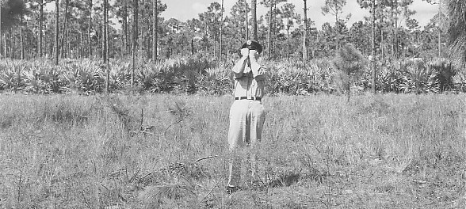

Le , à Ouest Palm Beach (Floride), D. S. "Sonny" Desvergers,
ex-marine et chef scout de la Troupe 33, ramène en voiture 3 scouts d'une conférence. Il se trouve à 1,2 km au Sud de
Lantana Road / intersection avec la Voie Militaire :
Roulant vers le sud sur la piste militaire, à environ 64 km/h avec la radio assez fort, je vis cette petite tache
de lumière se diriger vers le sol avec un angle d'environ 45°, selon une direction nord-sud. La lumière démarra à
environ 600 m et je la regardais par intervalles jusqu'à ce qu'elle arrive au sol et aux arbres, et soit hors de
vue. Les lumières étaient floues ou brumeuses sans couleur particulière — elles étaient juste blanches. C'était une
série de lumières, environ 7 ou 8, mais elles étaient toutes floues. Cela aurait pu être un avion qui s'écrasait,
bien que nous n'entendîmes aucun bruit plus fort que la radio. J'eus une réaction plutôt négative des garçons par
rapports aux lumières. Ils étaient effrayés et appeurés; Je ne pouvais pas les laisser seuls. C'est ce que je me
suis dit et nous avons continué à rouler. A environ 180 m plus loin sur la route, Bobby Ruffing âge de 12 ans vit
les mêmes lumières. Les autres garçons regardèrent alors et les virent. Je fit demi-tour avec la voiture et
retournais à environ 200 m en arrière où je pensais que les lumières étaient derrière les arbres. Pensant toujours
qu'il s'agissait d'un crash possible, je dis aux garçons que si je n'étais pas de retour dans , ils
devraient avertir le sheriff et appeler alors leurs familles et leur dire qu'ils étaient O.K. Ils comprirent bien et
j'allais dans les bois avec 2 lampes-torches et une machette.
Je marchais approximativement 300 m dans une zone clairsemée au milieu d'arbres de 6 m de haut environ, puis au
travers de palmiers épais sur environ 150 m et arrivait dans une autre clairière où il n'y avait que de jeunes
pousses de pin. Lorsque je ressortais dans cette clairière, je pointait la lumière vers le sol pensant qu'il pouvait
s'agir du lit d'un lac, pour être sûr que le sol était sec. J'avançais encore 10 ou 15 m dans la clairière. Je
sentis alors la présence de quelque chose qui n'aurait pas dû être là : c'était une sensation de chaleur, comme de
marcher dans un four. Je pouvais sentir quelques gouttes de sueur qui perlaient sur moi. Que ce fut ou non à cause
de la peur, je ne sais pas. Mais je savais que j'étais en présence de quelque chose ou de quelqu'un. Je pointais ma
lampe alentour, sans voir quoi que ce soi.
Desvergers atteint une clairière baignée d'une clarté rougerâtre, d'une forte chaleur et d'une
odeur âcre, écoeurante. En regardant le ciel, il ne voit plus les
étoiles : une masse sombre stationne à
10feet au-dessus du sol. Reculant et dirigeant sa lampe de
poche vers le haut, il voit que l'objet semble métallique en forme de disque à coupole supérieure, concavité
inférieure, et qu'il y a une sorte de "tourelle" au-dessus de cette soucoupe de
25feet de diamètre :
Je réalisai alors que la chaleur venait de au-dessus. Je pointais la lampe en l'air et vit la surface plane d'un
objet rond d'environ 10 m de diamètre, à environ 3 m au-dessus de moi. Je suppose que j'étais complètement paralysé
; Je ne pouvais pas bouger un muscle; J'étais mort de peur. Cela devait faire une bonne minute que j'étais
en-dessous de cette chose. Je voulais courir mais mes pieds ne fonctionnaient tout simplement pas. Je réalisais
alors qu'il y avait quelque chose d'anormal là-dedans. J'avais ma machette dans ma main droite et ma lampe torche
dans l'autre main, toujours sur l'objet au-dessus de moi. Je voulais le frapper avec ma machette, où lancer la lampe
contre lui, mais de quelque manière que ce soit je ne pouvait le faire ; mes réflexes ne fonctionnaient pas. Alors
je me retirai lentement d'en-dessous, quelques pas à la fois. Cela sembla une éternité. J'arrivai à son bord et je
vis que le bord de fuite inférieur avait une nature brillante, comme [phosphorescence] dans l'eau salée la nuit. Ce
n'était pas dominant mais c'était off et on. L'épaisseur du bord était d'environ 1 m, avec des hublots, des tuyères,
ou des ouvertures de manière continue autour de son bord. Je reculai encore quelques pas et pus voir un dôme au
sommet, en silouette. Cette chose ne fit jamais aucun autre bruit qu'un léger sifflement, semblable à de l'air
s'échappant d'un endroit où il était comprimé. Je n'entendis aucun moteur. Quoi que ce fut, il était absolument
suspendu en plein air avec vraiment rien ne touchant le sol. J'entendis alors un son semblable à une ouverture
d'écoutille ; c'est-à-dire le seul autre son qui fut étonnant. Il y avait comme un léger baragouinage — cela
semblait comme çà avec la distance — qui aurait pu être les garçons dans la voiture.
Pendant ce temps, les scouts continuent à attendre Desvergers à la voiture. Ils ne le voient pas revenir, et voient
une boule de feu rouge à hauteur du sommet des arbres, qui se déplace vers le bas en direction du point où ils ont vu
leur chef sout pour la dernière fois :
Bobby et les autres 2 garçons, Chuck Stevens et David Rowan, témoignèrent plus tard que lorsqu'ils attendaient dans
la voiture à environ 400 m au loin durant l'incident, ils virent diverses lumières, et même le chef scout, parmis
les arbres. Bobby dit: Tout la zone devint rouge. Nous fûmes effrayés et courrurent appeler le sheriff.
Un d'entre eux court jusqu'à une maison voisine pour avertir le sheriff local.
Du côté de Desvergers, un panneau s'ouvre alors dans cette tourelle, révélant une créature si terrifiante que
Desvergers refusera abolument de la décrire, déclarant qu'elle était simplement trop terrible pour des mots. A ce
moment, une sorte de gaz brûlant est émis du sommet, brûlant ses bras et l'assommant sur le sol :
Un enquêteur de l'USAF agissant selon le récit de Desvergers sur les lieux de l'observation

Une boule de feu rouge arriva dans ma direction depuis le sommet de cet objet. Elle n'avait pas de vitesse mais
semblait flotter droit vers mon visage. J'étais toujours immobile ; Je ne pouvais pas bouger. Je le voulais mais je
ne pouvais simplement pas faire bouger mes jambes. Je finis pas lâcher ma lampe torche et plaqua mes bras contre mon
visage et reçu le plein impact de ce flash rouge. Ce n'était pas une substance solide ; cela ressemblait plus à un
jaillissement d'air chaud ou quelque chose comme çà -- m'aveuglant momentanément et sentant quelque d'horrible, pire
que que de la chair brûlée. Le seul dommage visible fut que cela brûla les poils de mes avant-bras et brûla 2 ou 3
trous dans ma casquette. Il y avait juste une sensation de vascillement comme si mes bras essayaient de dormir.
La casquette de Desvergers comportant de petits trous de brûlures
Je commençais lentement à m'étourdir ou m'évanouir. Je tombais au sol et fut probablement out environ
. Lorsque je repris conscience, je n'était pas au même endroit où je m'étais évanoui. J'étais
toujours stupéfié ou choqué ou effrayé, et sentais toujours cette odeur horrible. J'essayai immédiatement de
retourner à la voiture. Je n'avais pas de lampe mais toujours ma machette.
L'adjoint du sherrif arrive à temps pour voir Desvergers sortir de la forêt, apparemment épuisé et clairement très
effrayé. Le sherrif voit que le visage, les avant-bras et le dos des mains de Desvergers sont sérieusement rougis
(brulûre au 1er degré).
Une voiture de l'adjoint du sheriff était garée sur le côté de l'autoroute. J'essayai de l'appeler ou de crier à
l'aide plusieurs fois après y être arrivé, mais le son ne voulait pas sortir ; Je n'émis pas un son avant d'être
arrivé presque au bord de la route. Je vis alors l'adjoint et sus que j'étais sauf...
Enquête et analyses
Lorsque Desvergers et des enquêteurs retournent à la clairière, ils trouvent une lampe torche, toujours allumée,
mais pas la seconde, qui a disparu de sa poche arrière.
Le FBI examine la casquette de Desvergers, endommagée durant l'incident, et indique qu'il n'y a pas de résidu de
ce qui a pu brûler les 3 trous qu'on y trouve. Un 4ème trou, dans la bande de transpiration, contient des résidus de
braise calcinée. Le rapport n'indique pas que les trous ont été fait par des brûlures de cigarette. Les marques de
roussi sur la casquette n'étaient pas présentes dans les replis de matière à l'extérieur de la casquette, indiquant
que la casquette n'était probablement pas portée lorsqu'elle fut roussie. Le rapport du FBI note également des trous
minuscules qui ne sont pas flagrants et indique qu'ils pourraient avoir été causés par des étincelles électriques.
Herbes prélevées à l'endroit de l'observation
Des échantillons d'herbe et du sol sont prélevés, depuis l'endroit où l'ovni aurait stationné. Après analyse, on
constate que, là où la saleté et le sable on été piétinés, les racines sont roussies. Les brins eux-mêmes ne sont
pas endommagés ; elles n'ont jamais été chauffées, à l'exception des extrêmités des plus longs. Ceux-ci ont bien sûr
été courbés, touchant le sol, et furent brûlés comme les racines. Les brûlures peuvent être reproduites en plaçant
des plans d'herbe dans un pan de terre et en les chauffant à environ 149° C avec un réchau à gaz. Ne sont trouvés
dans le sol aucun dispositif enterré pour chauffer le sol ni rien de chimique.
Echantillons "témoins" d'herbes témoin à 70 m alentours
L'ovni signalé dans cet incident aurait donc émis des radiations électromagnétiques, dont l'énergie infrarouge/à
micro-ondes aurait chauffé l'air sous-lui et pénétré le sol humide sur quelques cm, causant un chauffage
diélectrique. Un phénomène semblable fut rapporté dans d'autres
rencontres rapprochées avec des ovnis ou
avec les crop circles.